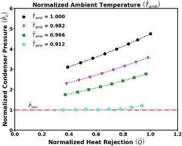
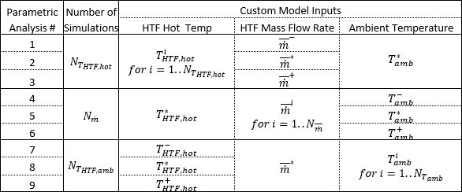
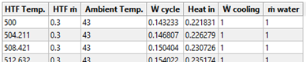
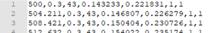
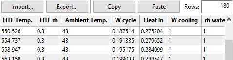
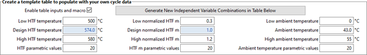
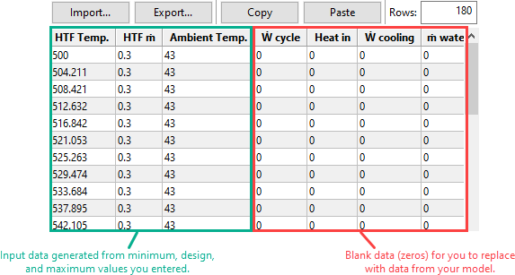

Power Cycle#
The power cycle converts thermal energy to electric energy. There are two options for modeling the power cycle:
The Rankine-cycle model is for Rankine-cycle steam engines with two open feed-water heaters, and a pre-heater, boiler and super-heater. This regression model was developed from a detailed first-principles basis Rankine cycle model and calculates cycle performance over the expected operating range by modeling each cycle component at off-design conditions. The model assumes that deviation in cycle performance at off-design conditions is independent of cycle design and only a function of deviation from the user-specified design point. This model is fast, flexible, and accurate, and suitable for modeling most conventional CSP power cycles.
The user-defined power cycle model allows you to use data from your own power cycle model in SAM, and can be used to model Rankine or other types of power cycles. It requires that you provide values for general power cycle parameters along with a tables of data showing the electrical power generated over a range of HTF mass flow rates, ambient temperatures, and ambient temperatures. SAM uses this data to build a power cycle regression model that considers single variable effects and two variable interactions.
Note
If you are modeling a supercritical Carbon dioxide (sCO2) cycle, you can use the sCO2 Cycle Integration macro with the` NLR Supercritical Carbon Dioxide (sCO2) Python model <NatLabRockies/SAM>`__. SAM 2020.2.29 is the most recent version to include an sCO2 option on the Power Cycle page.
The power cycle model is described in the following publications listed on the SAM website at https://sam.nlr.gov/concentrating-solar-power/csp-publications.html:
Chapter 4 of Wagner M, 2008. Simulation and Predictive Performance Modeling of Utility-Scale Central Receiver System Power Plants. Master of Science Thesis. University of Wisconsin-Madison
Chapter 3 of Wagner, M. J.; Gilman, P. (2011). Technical Manual for the SAM Physical Trough Model. 124 pp.; NREL Report No. TP-5500-51825.
Hamilton T.; Newman, A.; Wagner. M.; Braun, R. (2020). Off-design Performance of Molten Salt-driven Rankine Cycles and its Impact on the Optimal Dispatch of Concentrating Solar Power Systems. Energy Conversion and Management Vol 20 113025.
System Design Parameters#
The system design parameters are from the System Design page, where you can define the design-point parameters of the entire power tower system.
- Power cycle gross output, MWe
The power cycle electrical output at the design point, not accounting for parasitic losses.
- Estimated gross to net conversion factor
An estimate of the ratio of the electric energy delivered to the grid to the power cycle’s gross output to account for parasitic losses.
- Estimated net output (nameplate), MWe
The power cycle nominal capacity, calculated as the product of the gross output and gross-to-net conversion factor.
Estimated Net Output at Design (MWe) = Design Gross Output (MWe) × Estimated Gross to Net Conversion Factor
- Cycle thermal efficiency
The thermal to electric conversion efficiency of the power cycle at the design point.
- Cycle thermal power, MWt
The turbine thermal input at the power cycle inlet to operate at the design point.
- HTF hot temperature, °C
The design temperature of the hot heat transfer fluid at the power cycle block inlet.
- HTF cold temperature, °C
The design temperature the cold heat transfer fluid at the power cycle outlet.
General Design Parameters#
- Pumping power for HTF through power block, kW/kg/s
A coefficient used to calculate the electric power consumed by pumps to move heat transfer fluid through the power cycle.
- Fraction of thermal power needed for standby
The fraction of the turbine’s design thermal input required from storage to keep the power cycle in standby mode. This thermal energy is not converted into electric power. Default is 0.2.
- Power block startup time, hours
The time in hours that the system consumes energy at the startup fraction before it begins producing electricity. If the startup fraction is zero, the system will operate at the design capacity over the startup time. Default is 0.5 hours.
- Fraction of thermal power needed for startup
The fraction of the turbine’s design thermal input required by the system during startup. This thermal energy is not converted to electric power. Default is 0.75.
- Minimum turbine operation
The fraction of the nameplate electric capacity below which the power block does not generate electricity. Whenever the power block output is below the minimum load and thermal energy is available from the solar field, the field is defocused. For systems with storage, solar field energy is delivered to storage until storage is full. Default is 0.25.
- Maximum turbine over design operation
The maximum allowable power block output as a fraction of the electric nameplate capacity. Whenever storage is not available and the solar resource exceeds the design value of 950 W/m:sup:2, some heliostats in the solar field are defocused to limit the power block output to the maximum load. Default is 1.05.
- Cycle design HTF mass flow rate, kg/s
The hot heat transfer fluid (HTF) mass flow rate at the design point.
- HTF Mass Flow Rate (kg/s) = Cycle Thermal Power (MWt) × 1000 (kW/MW) ÷ Average HTF Cp (KJ/kg·K) ×
( HTF Hot Temperature (°C) - HTF Cold Temperature (°C) )
Rankine Cycle Parameters#
The power cycle page displays variables that specify the design operating conditions for the steam Rankine cycle used to convert thermal energy to electricity.
- Steam cycle blowdown fraction
The fraction of the steam mass flow rate in the power cycle that is extracted and replaced by fresh water. This fraction is multiplied by the steam mass flow rate in the power cycle for each hour of plant operation to determine the total required quantity of power cycle makeup water. The blowdown fraction accounts for water use related directly to replacement of the steam working fluid. The default value of 0.013 for the wet-cooled case represents makeup due to blowdown quench and steam cycle makeup during operation and startup. A value of 0.016 is appropriate for dry-cooled systems to account for additional wet-surface air cooling for critical Rankine cycle components.
- Turbine inlet pressure control
Determines the power cycle working fluid pressure during off-design loading.
Fixed Pressure: The power block maintains the design high pressure of the power cycle working fluid during off-design loading.
Sliding Pressure: The power block decreases the high pressure of the power cycle working fluid during off-design loading.
- Condenser type
Choose either an air-cooled condenser (dry cooling), evaporative cooling (wet cooling), or hybrid cooling system. Only evaporative and air-cooled are available for electric thermal energy storage systems.
The air-cooled condenser model utilizes a second-order bi-variate polynomial in terms of normalized ambient temperature and normalized heat rejection to determine normalized condenser pressure as shown in the graph below. Ambient temperature (converted to Kelvin) and heat rejection are normalized by their design conditions, while condenser pressure is normalized by the minimum condenser pressure. This model is valid for normalized ambient temperatures greater than 0.9. For conditions lower than this threshold, the condenser pressure is set to its minimum value.

In hybrid cooling, a wet-cooling system and dry-cooling share the heat rejection load. Although there are many possible theoretical configurations of hybrid cooling systems, SAM only allows a parallel cooling option.
Specify the hybrid cooling dispatch fractions on the System Control page.
- Ambient temperature at design, ºC
The ambient temperature at which the power cycle operates at its design-point-rated cycle conversion efficiency. For the air-cooled condenser option, use a dry bulb ambient temperature value. For the evaporative condenser, use the wet bulb temperature.
- ITD at design point, ºC
For the air-cooled type only. Initial temperature difference (ITD), difference between the temperature of steam at the turbine outlet (condenser inlet) and the ambient dry-bulb temperature.
Note
When you adjust the ITD, you are telling the model the conditions under which the system will achieve the thermal efficiency that you’ve specified. If you increase the ITD, you should also modify the thermal efficiency (and/or the design ambient temperature) to accurately describe the design-point behavior of the system. The off-design penalty in the modified system will follow once the parameters are corrected.
- Reference condenser water dT, ºC
For the evaporative condenser type only. The temperature rise of the cooling water across the condenser under design conditions, used to calculate the cooling water mass flow rate at design, and the steam condensing temperature.
- Approach temperature, ºC
For the evaporative type only. The temperature difference between the circulating water at the condenser inlet and the wet bulb ambient temperature, used with the ref. condenser water dT value to determine the condenser saturation temperature and thus the turbine back pressure.
- Condenser Pressure Ratio
For the air-cooled type only. The pressure-drop ratio across the air-cooled condenser heat exchanger, used to calculate the pressure drop across the condenser and the corresponding parasitic power required to maintain the air flow rate.
- Minimum condenser pressure
The minimum condenser pressure in inches of mercury prevents the condenser pressure from dropping below the level you specify. In a physical system, allowing the pressure to drop below a certain point can result in physical damage to the system. For evaporative (wet cooling), the default value is 1.25 inches of mercury. For air-cooled (dry cooling), the default is 2 inches of mercury. For hybrid systems, you can use the dry-cooling value of 2 inches of mercury.
- Cooling system part load levels
The cooling system part load levels tells the heat rejection system model how many discrete operating points there are. A value of 2 means that the system can run at either 100% or 50% rejection. A value of three means rejection operating points of 100% 66% 33%. The part load levels determine how the heat rejection operates under part load conditions when the heat load is less than full load. The default value is 2, and recommended range is between 2 and 10. The value must be an integer.
User Defined Power Cycle#
The user-defined power cycle model requires that you provide data from your own power cycle model that describes the cycle’s performance for a range of operating conditions. If you do not have such data, you should use the Rankine cycle model.
For a description of the input data requirements, see Neises, T.; Boyd, M. (DRAFT 2021). Description of SAM’s CSP User-defined Power Cycle Model (PDF 235 KB). It is available with other documentation of SAM’s CSP models on the SAM website at https://sam.nlr.gov/concentrating-solar-power/csp-publications.html.
If you are modeling a supercritical Carbon dioxide (sCO2) cycle, you can use the sCO2 Cycle Integration macro with the` NLR Supercritical Carbon Dioxide (sCO2) Python model <NatLabRockies/SAM>`__ to generate input data for the User Defined Power Cycle model.
User-defined Power Cycle Design Parameters#
The cooling parasitic load and water usage parameters are optional. SAM subtracts the cooling power requirement from the power cycle’s electric output.
- Cooling system water usage, kg/s
The cooling system water mass flow rate at the design point.
- Gross power consumed by cooling system, %
The electrical power consumed by the cooling system as a percentage of the power cycle gross output at the design point.
- Gross power consumed by cooling system, MWe
The cooling system gross power in megawatts of electricity, equal to the product of the gross cooling power percentage and the power cycle gross output at design.
Performance as a Function of HTF Temperature, HTF Mass Flow Rate and Ambient Temperature#
The input table for user-defined power cycle model defines the relationship between the independent variables for hot HTF temperature, HTF mass flow rate and ambient temperature and the dependent variables for cycle gross electrical output power, thermal input power, electrical consumption for cooling, and water mass flow rate.
The values in the table must use the following structure but may be in any order. For details, see the description of Table 1 in the draft Description of SAM’s CSP User-defined Power Cycle Model cited above.

Custom Power Cycle Simulations Required to Populate SAM’s Data Table
Note
The inputs for the table are normalized values, where 1 is the value at the design point. The table uses the following shorthand: Ẇ cycle = Power cycle gross output, Heat in = Cycle thermal input power, Ẇ cooling = Electrical consumption for cooling, ṁ water = Water usage.
Importing Cycle Performance Data#
You can import data into the cycle performance table from either a text file a spreadsheet. The image below shows the first few rows of the performance table that you can use as a guide to store the data in a spreadsheet.

To store the same data in a text file that SAM can read, the text file should contain comma-separated values and no headers:

To import cycle performance data:
To import from a text file, click Import and navigate to the text file containing the correctly formatted data.
To import from a spreadsheet, select and copy the data in the spreadsheet and click Paste.

SAM displays a summary of the HTF temperature, normalized HTF mass flow rate, and ambient temperature data from the cycle performance data under Independent variable information calculated from power cycle data in table below. The summary data is a quick way to verify that the data imported correctly.
Creating a Template for your Performance Data#
You can use SAM to generate a template for your data. The template contains the ranges of values you specify for HTF temperature, HTF mass flow rate, and ambient temperature. After you generate the template, you can add your own data for cycle gross output, cycle thermal input power, cycle cooling power, and water usage.
To create a template for your performance data:
Click Enable table inputs and macro.
Type low and high values for HTF temperature in °C, normalized HTF mass flow rate in kg/s, and ambient temperature in °C.
The design values are from the System Design page, except for ambient temperature.
Type the number of parametric values you want to include in the cycle performance table for each of the three parameters.
In this example, SAM creates 20 values between 500 and 580 °C for the HTF temperature column, 20 values for the normalized HTF mass flow rate, and 20 values for the ambient temperature. This results in a table with 180 rows (20 values per parameter × 3 parameters):

Click Generate New Independent Variable Combinations in Table Below.
SAM replaces the data in the cycle performance table with the ranges you defined in the HTF Temp, HTF ṁ, and Ambient Temp columns.
SAM also sets the values in the Ẇ cycle, Heat in, Ẇ cooling, and ṁ water columns to zero. These are the values you need to replace with data from your own model.

Click Export to export the data to a comma-separated text file. You can then edit the file to add your data and import it back into SAM. Or, click Copy to copy and paste the data into a spreadsheet.
Variable Descriptions#
- Low, design, and high HTF temperature, °C
The low and high hot HTF temperatures define the range of high HTF temperature values in the cycle performance table.
The design value is defined on the System Design page.
- Low, design, and high normalized HTF
The low and high HTF mass flow rates define the range of HTF mass flow rate values in the cycle performance table.
These values are normalized to the design point Cycle design HTF mass flow rate under General Design Parameters above, where 1 is equivalent to the design point value.
- Low, design, and high ambient temperature
The low, design, and high ambient temperatures define the range of ambient temperature values in the cycle performance table.
- Cycle Performance Table
Columns 1 to 3 are the input parameters hot HTF temperature, HTF mass flow rate and ambient temperature.
Column 4 is the normalized cycle gross electrical output power from your model.
Column 5 is the normalized thermal input power from your model.
Column 6 is the normalized electrical consumption for cooling from your model.
Column 7 is the water mass flow rate from your model.